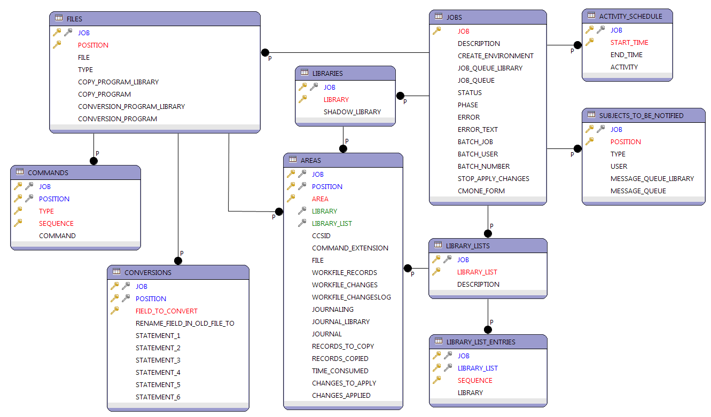

The JOBS table is the starting point. It configures a Rapid Fire job. A Rapid Fire job can copy one or more files.
The ACTIVITY_SCHEDULE specifies at which time the copy job is allowed to run. You can use it to pause the copy job over the day or at certain times.
The SUBJECTS_TO_BE_NOTIFIED contains entries for each subject that is notified, when the job finished copying data and is in Apply Journal Changes mode. Subjects can be user profiles or message queues.
The LIBRARIES table is used for storing pairs of production and associated shadow libraries. The intention is to reuse these pairs, when configuring the areas of the files that are copied.
The LIBRARY_LISTS table is used to define library lists. Library lists are required when Rapid Fire is asked to create the shadow environment, for compiling the files that are copied.
The LIBRARY_LISTS is only used, when Create environment is set to *YES.
The LIBRARY_LIST_ENTRIES table is the child of LIBRARY_LIST and stores the library names that make the library list.
The FILES table stores the files that are copied from a Rapid Fire job. It is used to associate a file with the copy and conversion program. The copy program is the program, that copies the data. It can be generated by Rapid Fire. The conversion program is optionally and it is used for converting data. For example, you need a conversion program if you change the type of a field. It is up to you to develop the conversion program.
The AREAS table specifies where to find a file and which library list to use for creating the shadow environment. It also specifies the CCSID that must be used for compiling the shadow file. In fact the AREAS table connects FILES with LIBRARIES and LIBRARY_LISTS.
The CONVERSIONS table specifies conversion statements that are embedded in the generated RPG program when special actions are required, when copying a field value from the old to the new field.
The COMMANDS table specifies the commands that must be executed for a file, to create the shadow environment, when Create environment is set to *YES for the job.
The COMMANDS is only used, when Create environment is set to *YES.